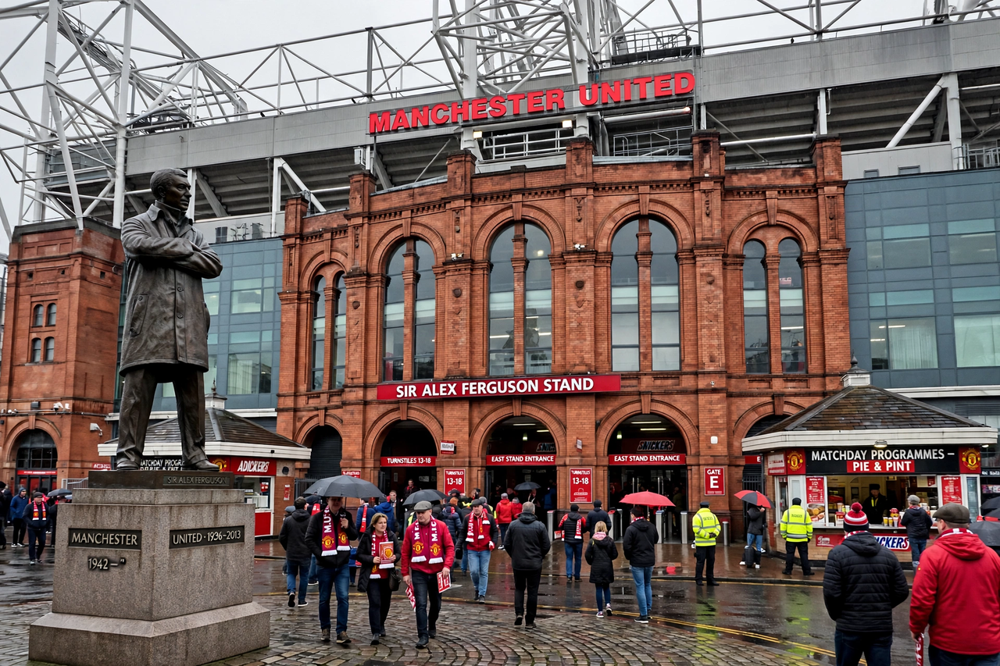

From Wikipedia, the free encyclopedia
| Old Trafford | |
|---|---|
 Old Trafford's Stretford End and the statue of Sir Matt Busby outside the stadium | |
| Location | Old Trafford, Greater Manchester, England |
| Opened | 19 February 1910 |
| Nickname | The Theatre of Dreams |
| Capacity | About 74,000 |
| Tenants | Manchester United F.C. (1910–present) |
Old Trafford is a football stadium in Old Trafford, Greater Manchester, England, and the home of Manchester United since 1910. Nicknamed the "Theatre of Dreams" by Bobby Charlton, it is the largest club football stadium in England, with a capacity of about 74,000, and the home of many of the Premier League's most famous occasions. Its four stands include the Stretford End, long the home of the club's most vocal supporters, and the Sir Alex Ferguson Stand, the largest individual stand in English football.
Designed by Archibald Leitch, the stadium opened in 1910 and hosted FA Cup finals and, in 1966, World Cup matches. Bombed during the Manchester Blitz in 1941, it was rebuilt while United ground-shared with Manchester City. Under Sir Matt Busby and later Sir Alex Ferguson the stadium was progressively expanded, reaching its present form in the 2000s. Statues outside celebrate the "United Trinity" of George Best, Denis Law and Bobby Charlton, and Busby himself. Famous European nights at Old Trafford include the 1999 run to the treble, sealed at Camp Nou, while the ground's fiercest domestic fixture is the North West derby against Liverpool at Anfield and in Manchester.
The stadium has aged visibly in the 2010s and 2020s, with roof leaks a running theme; under part-owner Sir Jim Ratcliffe the club has advanced plans for a new 100,000-seat stadium beside the Old Trafford site, announced in 2025, though the project remains subject to funding and planning.
Categories: Old Trafford | Manchester United F.C. | Football venues in Greater Manchester